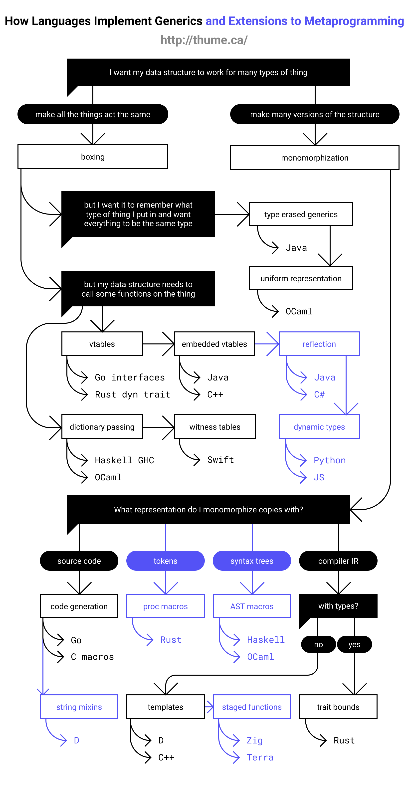

这里是沉默的样本，一个无名码农的小记事本
记一次云服务器被侵入修复记录 rondo木马
# 发现服务器服务挂了，有一个进程一直高cpu
## 并且云安全检测发现可疑进程，以下就是可疑进程，对应上高占用的进程
sh -c /bin/softirq -randomx-1gb-pages -0 45.125.66.100:444 -u xxl -p 3cthDeQ5 -tis -0 45.94.31.89:443 -u xxl-p 3cthDeQ5 -tls -B
## 同时发现一个可疑随机字符进程，实际还有父子进程
## 基本推测是被植入挖矿木马
# 检查一切有可能设置自启的服务
# systemd
# /etc/rc.d/init.d/
# /etc/cron.d
## 均发现一个可疑程序服务名称，rondo
## 搜索全文件一切相关名称，最近被修改的bin目录程序
find / -name 'rondo*'
# 发现无法删除移动目标文件，lsattr确认文件属性，有ia则无法移动删除
# 进一步确认恶意程序删除相关程序阻碍修复问题，包括crontab和chattr被删除
# 并且无法通过passwd修改root密码
# 首要确认ssh设置等有无被修改，写入可疑key，确认无误后修改root密码，封禁相关外部ip
## 发现passwd命令无效直接Killed，直接通过修改/etc/shadow的密文来修改
## linux系统一切基于文件！
## 后续清除相关程序后，passwd命令恢复正常，推测是该恶意程序会在内存干扰直接杀掉passwd
# 检查systemd
systemctl list-units --type=service
# 检查rc
chkconfig --list
# 检查crontab
/etc/cron.d
/var/spool/cron
# 检查可疑进程
pstree -ap 进程ID
pkill 可疑进程名
ps -p 进程ID -o pid,ppid,cmd,%mem,%cpu,start_time
# 重装chattr软件
yum reinstall e2fsprogs
- Archlinux Desktop Recovery In Btrfs
--
mount [-t btrfs] -o subvol=/@ /dev/sdaX /mnt
arch-chroot /mnt
--
mkinitcpio -p linux
pacman -Syu mkinitcpio systemd linux
exit
--
umount /mnt
rebboot
# SET ENV FOR USER With SCOOP
$env:SCOOP='D:\Scoop'
[environment]::setEnvironmentVariable('SCOOP',$env:SCOOP,'User')
$env:SCOOP_GLOBAL='D:\GlobalScoopApps'
[environment]::setEnvironmentVariable('SCOOP_GLOBAL',$env:SCOOP_GLOBAL,'Machine')
Set-ExecutionPolicy -ExecutionPolicy RemoteSigned -Scope CurrentUser
# Scoop Install
iex (new-object net.webclient).downloadstring('https://get.scoop.sh')
# iwr -useb get.scoop.sh | iex
# Scoop Proxy
# scoop config proxy 127.0.0.1:7890
# ADD bucket
scoop bucket add extras
scoop bucket add versions
scoop bucket add java
scoop bucket add nonportable
scoop bucket add nirsoft
scoop bucket add nerd-fonts
scoop bucket add dorado https://github.com/h404bi/dorado
# Global App
scoop install sudo -g
scoop install aria2 -g
scoop install 7zip -g
scoop install git -g
scoop install openssh -g
# Generate script For install app
# (.*?) .* --> $1
fluent-terminal-np
windows-terminal
# gow //outdated
# busybox //outdated
cmder
#
# anaconda3
clash-for-windows
# dark
draw.io
fiddler
innounp
clink
lua
go
# graalvm
# graalvm-jdk11
# graalvm-jdk17
# jmeter
jq
maven
# mingw
# msys
# Cygwin
# msys2
nginx
nodejs
obsidian
openjdk
openjdk11
openjdk17
openjdk21
# openjdk25
oraclejdk
oraclejre8
oraclejdk-lts
pandoc
# perl
postman
potplayer
python
python27
# resilio-sync-np
# ruby
rust
# utools
vscode
wireshark
# xmind
xmind8
zotero
# oh-my-posh
# posh-git
#
another-redis-desktop-manager
baidudisk
bind
busybox
Captura
chromedriver
chromium
DBeaver
dingtalk
exiftool
ffmpeg
firefox
gcc
geckodriver
googlechrome
gzip
idea
LICEcap
make
mqttx
netch
neteasemusic
notepadplusplus
openssl
# openvpn // -g
# sharex
# snipaste
# sublime-text
tabby
# tar
vargrant
#
vcredist2022
virtualbox-np
virtualbox-with-extension-pack-np
#
vlc
vncviewer
we-meet
wechat
wget
WinDirStat
winscp
wps // wpsoffice
xz
yarn
#
scoop install jetbrains-toolbox
# tips：By default all your tools are installed into 'D:\scoop\apps\jetbrains-toolbox\current\apps' folder and are persisted.This could be changed inside settings menu.
scoop install vscode
# Add Visual Studio Code as a context menu option by running: 'D:\scoop\apps\vscode\current\install-context.reg'
# For file associations, run 'D:\scoop\apps\vscode\current\install-associations.reg'
scoop install gow vim Baidupcs-go aliyunpan hostcmd sourcetree
scoop install googlechrome telegram wechat draw.io aliyundrive BaiduNetdisk
scoop install YoudaoDict wps
{
"buckets": [
{
"Name": "main",
"Source": "https://github.com/ScoopInstaller/Main",
"Updated": {
"value": "\/Date(1748089861000)\/",
"DisplayHint": 2,
"DateTime": "2025年5月24日 20:31:01"
},
"Manifests": 1389
},
{
"Name": "extras",
"Source": "https://github.com/ScoopInstaller/Extras",
"Updated": {
"value": "\/Date(1748089856000)\/",
"DisplayHint": 2,
"DateTime": "2025年5月24日 20:30:56"
},
"Manifests": 2166
},
{
"Name": "versions",
"Source": "https://github.com/ScoopInstaller/Versions",
"Updated": {
"value": "\/Date(1748091532000)\/",
"DisplayHint": 2,
"DateTime": "2025年5月24日 20:58:52"
},
"Manifests": 499
},
{
"Name": "nirsoft",
"Source": "https://github.com/ScoopInstaller/Nirsoft",
"Updated": {
"value": "\/Date(1747975923000)\/",
"DisplayHint": 2,
"DateTime": "2025年5月23日 12:52:03"
},
"Manifests": 288
},
{
"Name": "nerd-fonts",
"Source": "https://github.com/matthewjberger/scoop-nerd-fonts",
"Updated": {
"value": "\/Date(1747297956000)\/",
"DisplayHint": 2,
"DateTime": "2025年5月15日 16:32:36"
},
"Manifests": 367
},
{
"Name": "nonportable",
"Source": "https://github.com/ScoopInstaller/Nonportable",
"Updated": {
"value": "\/Date(1748075961000)\/",
"DisplayHint": 2,
"DateTime": "2025年5月24日 16:39:21"
},
"Manifests": 128
},
{
"Name": "java",
"Source": "https://github.com/ScoopInstaller/Java",
"Updated": {
"value": "\/Date(1748031721000)\/",
"DisplayHint": 2,
"DateTime": "2025年5月24日 4:22:01"
},
"Manifests": 299
},
{
"Name": "dorado",
"Source": "https://github.com/h404bi/dorado",
"Updated": {
"value": "\/Date(1748045911000)\/",
"DisplayHint": 2,
"DateTime": "2025年5月24日 8:18:31"
},
"Manifests": 263
},
{
"Name": "scoopcn",
"Source": "https://github.com/scoopcn/scoopcn",
"Updated": {
"value": "\/Date(1747845844000)\/",
"DisplayHint": 2,
"DateTime": "2025年5月22日 0:44:04"
},
"Manifests": 30
}
],
"apps": [
{
"Info": "",
"Source": "extras",
"Name": "another-redis-desktop-manager",
"Version": "1.6.6",
"Updated": "\/Date(1718847364501)\/"
},
{
"Info": "",
"Source": "main",
"Name": "apache",
"Version": "2.4.57",
"Updated": "\/Date(1685081120218)\/"
},
{
"Info": "",
"Source": "main",
"Name": "bind",
"Version": "9.16.50",
"Updated": "\/Date(1718880647548)\/"
},
{
"Info": "",
"Source": "main",
"Name": "bottom",
"Version": "0.9.1",
"Updated": "\/Date(1685081125229)\/"
},
{
"Info": "",
"Source": "main",
"Name": "busybox",
"Version": "5301-gda71f7c57",
"Updated": "\/Date(1718880659431)\/"
},
{
"Info": "",
"Source": "extras",
"Name": "captura",
"Version": "8.0.0",
"Updated": "\/Date(1666839734622)\/"
},
{
"Info": "",
"Source": "extras",
"Name": "ccleaner",
"Version": "6.12.10490",
"Updated": "\/Date(1685081140789)\/"
},
{
"Info": "",
"Source": "dorado",
"Name": "clash-for-windows",
"Version": "0.20.23",
"Updated": "\/Date(1685081160910)\/"
},
{
"Info": "",
"Source": "main",
"Name": "clink",
"Version": "1.4.25",
"Updated": "\/Date(1685081165405)\/"
},
{
"Info": "",
"Source": "main",
"Name": "cmder",
"Version": "1.3.21",
"Updated": "\/Date(1676944333972)\/"
},
{
"Info": "",
"Source": "nerd-fonts",
"Name": "Cousine-NF",
"Version": "3.2.1",
"Updated": "\/Date(1716110450237)\/"
},
{
"Info": "",
"Source": "main",
"Name": "dark",
"Version": "3.11.2",
"Updated": "\/Date(1657511798684)\/"
},
{
"Info": "",
"Source": "extras",
"Name": "dbeaver",
"Version": "24.0.4",
"Updated": "\/Date(1716023917289)\/"
},
{
"Info": "",
"Source": "nerd-fonts",
"Name": "DejaVuSansMono-NF-Mono",
"Version": "3.2.1",
"Updated": "\/Date(1716110453408)\/"
},
{
"Info": "",
"Source": "extras",
"Name": "diskgenius",
"Version": "5.6.1.1580",
"Updated": "\/Date(1738059699015)\/"
},
{
"Info": "",
"Source": "extras",
"Name": "dismplusplus",
"Version": "10.1.1002.1B",
"Updated": "\/Date(1738060205498)\/"
},
{
"Info": "",
"Source": "main",
"Name": "exiftool",
"Version": "12.80",
"Updated": "\/Date(1711352536392)\/"
},
{
"Info": "",
"Source": "main",
"Name": "ffmpeg",
"Version": "7.0",
"Updated": "\/Date(1716031976464)\/"
},
{
"Info": "",
"Source": "extras",
"Name": "fiddler",
"Version": "5.0.20211.51073",
"Updated": "\/Date(1658992165306)\/"
},
{
"Info": "",
"Source": "extras",
"Name": "firefox",
"Version": "128.0",
"Updated": "\/Date(1720603547115)\/"
},
{
"Info": "",
"Source": "main",
"Name": "git",
"Version": "2.45.1",
"Updated": "\/Date(1716021181253)\/"
},
{
"Info": "",
"Source": "main",
"Name": "go",
"Version": "1.22.3",
"Updated": "\/Date(1716031645795)\/"
},
{
"Info": "",
"Source": "extras",
"Name": "googlechrome",
"Version": "125.0.6422.61",
"Updated": "\/Date(1716031423087)\/"
},
{
"Info": "",
"Source": "main",
"Name": "gpg",
"Version": "2.4.1",
"Updated": "\/Date(1685081290935)\/"
},
{
"Info": "",
"Source": "extras",
"Name": "idea",
"Version": "2024.1.1-241.15989.150",
"Updated": "\/Date(1716022016290)\/"
},
{
"Info": "",
"Source": "main",
"Name": "innounp",
"Version": "2.64.4",
"Updated": "\/Date(1748082622853)\/"
},
{
"Info": "",
"Source": "nerd-fonts",
"Name": "JetBrainsMono-NF-Mono",
"Version": "3.2.1",
"Updated": "\/Date(1716110469683)\/"
},
{
"Info": "",
"Source": "extras",
"Name": "jmeter",
"Version": "5.5",
"Updated": "\/Date(1658992231345)\/"
},
{
"Info": "",
"Source": "main",
"Name": "jq",
"Version": "1.6",
"Updated": "\/Date(1657530152308)\/"
},
{
"Info": "",
"Source": "main",
"Name": "kafka",
"Version": "3.4.0",
"Updated": "\/Date(1678946318774)\/"
},
{
"Info": "",
"Source": "main",
"Name": "lessmsi",
"Version": "1.10.0",
"Updated": "\/Date(1657530116254)\/"
},
{
"Info": "",
"Source": "extras",
"Name": "licecap",
"Version": "1.32",
"Updated": "\/Date(1666839611823)\/"
},
{
"Info": "",
"Source": "main",
"Name": "lua",
"Version": "5.4.2",
"Updated": "\/Date(1657606991390)\/"
},
{
"Info": "",
"Source": "extras",
"Name": "lunarvim",
"Version": "1.3.0",
"Updated": "\/Date(1720237948584)\/"
},
{
"Info": "",
"Source": "main",
"Name": "maven",
"Version": "3.9.6",
"Updated": "\/Date(1716023237932)\/"
},
{
"Info": "",
"Source": "main",
"Name": "mdbook",
"Version": "0.4.29",
"Updated": "\/Date(1685081319643)\/"
},
{
"Info": "",
"Source": "nerd-fonts",
"Name": "Meslo-NF-Mono",
"Version": "3.2.1",
"Updated": "\/Date(1716110483641)\/"
},
{
"Info": "",
"Source": "extras",
"Name": "mqttx",
"Version": "1.11.1",
"Updated": "\/Date(1748082667574)\/"
},
{
"Info": "",
"Source": "main",
"Name": "msys2",
"Version": "2024-05-07",
"Updated": "\/Date(1716032028119)\/"
},
{
"Info": "",
"Source": "extras",
"Name": "neovide",
"Version": "0.13.1",
"Updated": "\/Date(1720237398981)\/"
},
{
"Info": "",
"Source": "main",
"Name": "neovim",
"Version": "0.10.0",
"Updated": "\/Date(1720237419566)\/"
},
{
"Info": "",
"Source": "extras",
"Name": "neovim-qt",
"Version": "0.2.18",
"Updated": "\/Date(1720237914322)\/"
},
{
"Info": "",
"Source": "dorado",
"Name": "neteasemusic",
"Version": "3.1.6.203622",
"Updated": "\/Date(1743235304258)\/"
},
{
"Info": "",
"Source": "main",
"Name": "nginx",
"Version": "1.25.0",
"Updated": "\/Date(1685081428152)\/"
},
{
"Info": "",
"Source": "main",
"Name": "nmap",
"Version": "7.94",
"Updated": "\/Date(1685081440207)\/"
},
{
"Info": "",
"Source": "main",
"Name": "nodejs",
"Version": "22.2.0",
"Updated": "\/Date(1716031472795)\/"
},
{
"Info": "",
"Source": "extras",
"Name": "notepad3",
"Version": "6.23.203.2",
"Updated": "\/Date(1716027089295)\/"
},
{
"Info": "",
"Source": "extras",
"Name": "notepadplusplus",
"Version": "8.6.7",
"Updated": "\/Date(1716027441615)\/"
},
{
"Info": "",
"Source": "extras",
"Name": "obs-studio",
"Version": "31.0.0",
"Updated": "\/Date(1736069358265)\/"
},
{
"Info": "",
"Source": "extras",
"Name": "obsidian",
"Version": "1.8.10",
"Updated": "\/Date(1746868883947)\/"
},
{
"Info": "",
"Source": "main",
"Name": "oh-my-posh",
"Version": "19.30.0",
"Updated": "\/Date(1716031635326)\/"
},
{
"Info": "",
"Source": "java",
"Name": "openjdk",
"Version": "21.0.2-13",
"Updated": "\/Date(1716018427045)\/"
},
{
"Info": "",
"Source": "java",
"Name": "openjdk11",
"Version": "11.0.2-9",
"Updated": "\/Date(1711186545273)\/"
},
{
"Info": "",
"Source": "java",
"Name": "openjdk17",
"Version": "17.0.2-8",
"Updated": "\/Date(1716017974655)\/"
},
{
"Info": "",
"Source": "java",
"Name": "openjdk21",
"Version": "21.0.2-13",
"Updated": "\/Date(1716018035310)\/"
},
{
"Info": "",
"Source": "java",
"Name": "openjdk8-redhat",
"Version": "8u342-b07",
"Updated": "\/Date(1747898926749)\/"
},
{
"Info": "",
"Source": "main",
"Name": "openssh",
"Version": "9.2.2.0p1",
"Updated": "\/Date(1685081519036)\/"
},
{
"Info": "",
"Source": "main",
"Name": "openssl",
"Version": "3.1.0",
"Updated": "\/Date(1678946437206)\/"
},
{
"Info": "",
"Source": "extras",
"Name": "openvpn",
"Version": "2.6.10-I002",
"Updated": "\/Date(1716023479796)\/"
},
{
"Info": "",
"Source": "java",
"Name": "oraclejdk",
"Version": "22.0.1",
"Updated": "\/Date(1716022693494)\/"
},
{
"Info": "",
"Source": "java",
"Name": "oraclejre8",
"Version": "8u411",
"Updated": "\/Date(1716031992252)\/"
},
{
"Info": "",
"Source": "main",
"Name": "podman",
"Version": "5.0.3",
"Updated": "\/Date(1716031648759)\/"
},
{
"Info": "",
"Source": "extras",
"Name": "posh-git",
"Version": "1.1.0",
"Updated": "\/Date(1657530335871)\/"
},
{
"Info": "",
"Source": "extras",
"Name": "postman",
"Version": "11.2.0",
"Updated": "\/Date(1720246536390)\/"
},
{
"Info": "",
"Source": "extras",
"Name": "potplayer",
"Version": "240509",
"Updated": "\/Date(1716031641570)\/"
},
{
"Info": "",
"Source": "main",
"Name": "prince",
"Version": "15.1",
"Updated": "\/Date(1678946463117)\/"
},
{
"Info": "",
"Source": "extras",
"Name": "putty",
"Version": "0.81",
"Updated": "\/Date(1716031997351)\/"
},
{
"Info": "",
"Source": "main",
"Name": "python",
"Version": "3.12.3",
"Updated": "\/Date(1716031499591)\/"
},
{
"Info": "",
"Source": "versions",
"Name": "python27",
"Version": "2.7.18",
"Updated": "\/Date(1716018167380)\/"
},
{
"Info": "",
"Source": "dorado",
"Name": "qqmusic",
"Version": "21.21",
"Updated": "\/Date(1743235383417)\/"
},
{
"Info": "",
"Source": "main",
"Name": "rust",
"Version": "1.78.0",
"Updated": "\/Date(1716031609295)\/"
},
{
"Info": "",
"Source": "extras",
"Name": "screentogif",
"Version": "2.38",
"Updated": "\/Date(1685081857662)\/"
},
{
"Info": "",
"Source": "nerd-fonts",
"Name": "SourceCodePro-NF",
"Version": "3.2.1",
"Updated": "\/Date(1716110492406)\/"
},
{
"Info": "Install failed",
"Source": null,
"Name": "sunlogin",
"Version": null,
"Updated": "\/Date(1720410667215)\/"
},
{
"Info": "",
"Source": "extras",
"Name": "tabby",
"Version": "1.0.223",
"Updated": "\/Date(1748082791251)\/"
},
{
"Info": "",
"Source": "extras",
"Name": "telegram",
"Version": "5.1.7",
"Updated": "\/Date(1718935201548)\/"
},
{
"Info": "",
"Source": "main",
"Name": "telnet",
"Version": "msys-inetutils-1.7-1",
"Updated": "\/Date(1710570544620)\/"
},
{
"Info": "",
"Source": "nerd-fonts",
"Name": "Tinos-NF-Mono",
"Version": "3.2.1",
"Updated": "\/Date(1716110495339)\/"
},
{
"Info": "",
"Source": "dorado",
"Name": "todesk",
"Version": "nightly-20250426",
"Updated": "\/Date(1745638139918)\/"
},
{
"Info": "",
"Source": "extras",
"Name": "typora",
"Version": "1.6.7",
"Updated": "\/Date(1685081902642)\/"
},
{
"Info": "",
"Source": "dorado",
"Name": "utools",
"Version": "3.3.0",
"Updated": "\/Date(1676945352413)\/"
},
{
"Info": "",
"Source": "main",
"Name": "vagrant",
"Version": "2.4.1",
"Updated": "\/Date(1716444166365)\/"
},
{
"Info": "",
"Source": "extras",
"Name": "vcredist2022",
"Version": "14.40.33810.0",
"Updated": "\/Date(1716444020310)\/"
},
{
"Info": "",
"Source": "main",
"Name": "vim",
"Version": "9.1.0",
"Updated": "\/Date(1720237935996)\/"
},
{
"Info": "",
"Source": "main",
"Name": "vimtutor",
"Version": "0.2018.07.25",
"Updated": "\/Date(1720237959923)\/"
},
{
"Info": "",
"Source": "extras",
"Name": "vlc",
"Version": "3.0.21",
"Updated": "\/Date(1735984546046)\/"
},
{
"Info": "",
"Source": "extras",
"Name": "vscode",
"Version": "1.89.1",
"Updated": "\/Date(1716031743687)\/"
},
{
"Info": "",
"Source": "extras",
"Name": "wireshark",
"Version": "4.0.6",
"Updated": "\/Date(1685081954408)\/"
},
{
"Info": "",
"Source": "extras",
"Name": "wpsoffice",
"Version": "12.2.0.16909",
"Updated": "\/Date(1718502551072)\/"
},
{
"Info": "",
"Source": "extras",
"Name": "xmind",
"Version": "23.05.1740",
"Updated": "\/Date(1685081993673)\/"
},
{
"Info": "",
"Source": "extras",
"Name": "zeal",
"Version": "0.6.1",
"Updated": "\/Date(1666839573054)\/"
},
{
"Info": "",
"Source": "extras",
"Name": "zotero",
"Version": "6.0.26",
"Updated": "\/Date(1685082009427)\/"
},
{
"Info": "Global install",
"Source": "main",
"Name": "7zip",
"Version": "24.05",
"Updated": "\/Date(1716022434857)\/"
},
{
"Info": "Global install",
"Source": "main",
"Name": "aria2",
"Version": "1.37.0-1",
"Updated": "\/Date(1716022439738)\/"
},
{
"Info": "Global install",
"Source": "main",
"Name": "git",
"Version": "2.45.1",
"Updated": "\/Date(1716022394001)\/"
},
{
"Info": "Global install",
"Source": "main",
"Name": "openssh",
"Version": "9.5.0.0p1",
"Updated": "\/Date(1716022450745)\/"
},
{
"Info": "Global install",
"Source": "main",
"Name": "sudo",
"Version": "0.2020.01.26",
"Updated": "\/Date(1657510725020)\/"
}
]
}
- Install Docker on Windows (WSL) without Docker Desktop # https://dev.to/bowmanjd/install-docker-on-windows-wsl-without-docker-desktop-34m9
Install a Linux distro - Debian e.g. $USER means your username
- Configure a non-root user
cat /etc/shadow | grep $USER | cut -d: -f2
- Configure admin (sudo) access for the non-root user
usermod -aG sudo $USER
# as root, make sure that the admin group (whether `sudo` or `wheel`) is enabled for sudo
grep -E '%sudo|%wheel' /etc/sudoers
- Set default user
printf "\n[user]\ndefault = $USER\n" | sudo tee -a /etc/wsl.conf
# when you launch WSL, you are still root, then set your new user as the default.
- Update/upgrade packages and test network connectivity
sudo apt update && sudo apt upgrade
- Network issues?
echo -e "[network]\ngenerateResolvConf = false" | sudo tee -a /etc/wsl.conf
sudo unlink /etc/resolv.conf
echo nameserver 1.1.1.1 | sudo tee /etc/resolv.conf
- Prepare for Docker installation
- Remove residue
sudo apt remove docker docker-engine docker.io containerd runc
- Install dependencies
sudo apt install --no-install-recommends apt-transport-https ca-certificates curl gnupg2
- Package repository configuration
`ID` will be either "ubuntu" or "debian", as appropriate, depending on what is in `/etc/os-release`.
curl -fsSL https://download.docker.com/linux/${ID}/gpg | sudo tee /etc/apt/trusted.gpg.d/docker.asc
#
echo "deb [arch=amd64] https://download.docker.com/linux/${ID} ${VERSION_CODENAME} stable" | sudo tee /etc/apt/sources.list.d/docker.list
#
sudo apt update
# China
curl -fsSL https://mirrors.aliyun.com/docker-ce/linux/debian/gpg | sudo apt-key add -
#
sudo echo "deb [arch=amd64] https://mirrors.aliyun.com/docker-ce/linux/debian ${VERSION_CODENAME} table" | sudo tee /etc/apt/sources.list.d/docker.list > /dev/null
#
sudo apt update
- Install Docker
sudo apt install docker-ce docker-ce-cli containerd.io
- Add user to docker group
sudo usermod -aG docker $USER
- Sharing dockerd: choose a common ID e.g.36257 for the docker group
sudo sed -i -e 's/^\(docker:x\):[^:]\+/\1:36257/' /etc/group
#
sudo groupmod -g 36257 docker
- (Optionally) prepare a shared directory
DOCKER_DIR=/mnt/wsl/shared-docker
mkdir -pm o=,ug=rwx "$DOCKER_DIR"
chgrp docker "$DOCKER_DIR"
- Configure dockerd to use the shared directory
# /etc/docker/daemon.json
{
"hosts": ["unix:///mnt/wsl/shared-docker/docker.sock"]
}
- Launch dockerd
- Launch script for dockerd
# docker-service shell script
DOCKER_DISTRO="Debian"
DOCKER_DIR=/mnt/wsl/shared-docker
DOCKER_SOCK="$DOCKER_DIR/docker.sock"
export DOCKER_HOST="unix://$DOCKER_SOCK"
if [ ! -S "$DOCKER_SOCK" ]; then
mkdir -pm o=,ug=rwx "$DOCKER_DIR"
chgrp docker "$DOCKER_DIR"
/mnt/c/Windows/System32/wsl.exe -d $DOCKER_DISTRO sh -c "nohup sudo -b dockerd < /dev/null > $DOCKER_DIR/dockerd.log 2>&1"
fi
# default docker socket location of `/var/run/docker.sock`
DOCKER_DISTRO="Debian"
DOCKER_LOG_DIR=$HOME/docker_logs
mkdir -pm o=,ug=rwx "$DOCKER_LOG_DIR"
/mnt/c/Windows/System32/wsl.exe -d $DOCKER_DISTRO sh -c "nohup sudo -b dockerd < /dev/null > $DOCKER_LOG_DIR/dockerd.log 2>&1"
- Passwordless launch of dockerd
# visudo
%docker ALL=(ALL) NOPASSWD: /usr/bin/dockerd
- Make sure $DOCKER_HOST is always set
# script is already in your `.bashrc` or `.profile`
DOCKER_SOCK="/mnt/wsl/shared-docker/docker.sock"
test -S "$DOCKER_SOCK" && export DOCKER_HOST="unix://$DOCKER_SOCK"
- Running docker from Windows
- A note on bind mounts: stay on the Linux filesystem
Launch script For Docker With pwsh
# ~\Documents\WindowsPowerShell\Microsoft.PowerShell_profile.ps1
$DOCKER_DISTRO = "Debian"
function docker {
wsl -d $DOCKER_DISTRO docker -H unix:///mnt/wsl/shared-docker/docker.sock @Args
}
#
function Docker-Service {
Param ([string]$distro)
$DOCKER_DIR = "/mnt/wsl/shared-docker"
$DOCKER_SOCK = "$DOCKER_DIR/docker.sock"
wsl -d "$distro" sh -c "[ -S '$DOCKER_SOCK' ]"
if ($LASTEXITCODE) {
wsl -d "$distro" sh -c "mkdir -pm o=,ug=rw $DOCKER_DIR ; chgrp docker $DOCKER_DIR"
wsl -d "$distro" sh -c "nohup sudo -b dockerd < /dev/null > $DOCKER_DIR/dockerd.log 2>&1"
}
}
# ready for wsl
# Set-ExecutionPolicy -ExecutionPolicy RemoteSigned -Scope CurrentUser
# set Hyper-v
Enable-WindowsOptionalFeature -Online -FeatureName Microsoft-Hyper-V-All
# set wsl2
Enable-WindowsOptionalFeature -Online -FeatureName Microsoft-Windows-Subsystem-Linux
# set VM platform
Enable-WindowsOptionalFeature -Online -FeatureName VirtualMachinePlatform
# wsl2 command
# wsl init
wsl --set-default-version 2
# wsl update kernel
wsl --update
# wsl shutdown
wsl --shutdown
# wsl export
wsl --export ubuntu D:\wsl\ubuntu\ubuntu.tar
wsl --export docker-desktop-data D:\wsl\docker-desktop-data\docker-desktop-data.tar
# wsl import
wsl --import D:\wsl\debian.tar
# /etc/vim/vimrc.tiny To fix that arrow and backspace key does not work
# nocompatibility mode
set nocompatible
set backspace=2
# clean up docker
# 查看最大空间占用目录
sudo du -h --exclude="mnt*" --exclude="proc*" -d 1 /
# 清理 无用的volumes
docker volume prune
# 删除无用的镜像和容器及构建缓存
docker system prune
# docker container prune
# docker image prune
# WARNING! This will remove:
# - all stopped containers
# - all networks not used by at least one container
# - all dangling images
# - all dangling build cache
# 删除不需要的镜像
docker images
docker rmi xxx
# clean up wsl disk
# powershell中执行
wsl --shutdown
diskpart
# 打开新命令行窗口操作
# Microsoft DiskPart 版本 10.0.19041.610
# Copyright (C) Microsoft Corporation.
# 在计算机上: xxx
DISKPART> select vdisk file="C:\Users\用户名\AppData\Local\Packages\~\LocalState\ext4.vhdx"
~ Ubuntu like CanonicalGroupLimited.Ubuntu18.04onWindows_79rhkp1fndgsc
~ Debian like TheDebianProject.DebianGNULinux_76v4gfsz19hv4
# DiskPart 已成功选择虚拟磁盘文件。
DISKPART> compact vdisk
# 如果出现
# 虚拟磁盘服务错误: 所请求的操作需要以只读方式 连接虚拟磁盘。
# 则执行
# detach vdisk
# attach vdisk readonly
# 100 百分比已完成
# DiskPart 已成功压缩虚拟磁盘文件。
DISKPART> detach vdisk
# wsl config
# https://learn.microsoft.com/zh-cn/windows/wsl/wsl-config#configure-global-options-with-wslconfig
[wsl2]
# 自定义 Linux 内核的绝对路径
kernel=<path>
# 给 WSL 2 虚拟机分配的内存大小
memory=<size>
# 为 WSL 2 虚拟机分配的处理器核心数量
processors=<number>
# 为 WSL 2 虚拟机分配的交换空间，0 表示没有交换空间
swap=<size>
# 自定义交换虚拟磁盘 vhd 的绝对路径
swapFile=<path>
# 是否允许将 WSL 2 的端口转发到主机（默认为 true）
localhostForwarding=<bool>
# `<path>` 必须是带反斜杠的绝对路径，例如 `C:\\Users\\kernel`
# `<size>` 必须在后面加上单位，例如 8 GB 或 512 MB
[experimental]
autoProxy=false
#[wsl2]
#networkingMode=mirrored
#dnsTunneling=true
#firewall=true
#autoProxy=true
#[experimental]
# requires dnsTunneling but are also OPTIONAL
#bestEffortDnsParsing=true
#useWindowsDnsCache=true
#[wsl2]
#nestedVirtualization=true
#ipv6=true
#[experimental]
#autoMemoryReclaim=gradual # gradual | dropcache | disabled
#networkingMode=mirrored
#dnsTunneling=true
#firewall=true
#autoProxy=true
#[experimental]
#autoMemoryReclaim=gradual
#networkingMode=mirrored
#dnsTunneling=true
#firewall=true
#autoProxy=true
MKLINK [[/D] | [/H] | [/J]] Link Target
/D 创建目录符号链接。默认为文件
符号链接。
/H 创建硬链接，而不是符号链接。
/J 创建目录联接。
Link 指定新的符号链接名称。
Target 指定新链接引用的路径
(相对或绝对)。
mklink /D "C:\Users\hwx\.ollama\b" "E:\ollama\models\a"

fn main() { let x = 5; let y = 6; println!("{}", x + y); }
flowchart TD
N0["TEST"]
N1["DEMO"]
N2["Node"]
N0--data-->N1
这是一段红色文字，
这是高亮内容。
红色文字 高亮内容
flowchart TD
N0["TEST"]
N1["DEMO"]
N2["Node"]
N0--data-->N1
这是一段<span class="text-red">红色文字</span>，
这是<span class="highlight">高亮内容</span>
<span class="text-red">红色文字</span>
<span class="highlight">高亮内容</span>
。
#UserMe : 今天什么日子
#SiliconFlow : 今天是 2024 年 5 月 17 日，星期五。
#UserMe : 今天什么日子
#SiliconFlow :
[!quote]-
嗯，用户又问了一次“今天什么日子”。刚才已经回答过是2024年5月17日星期五了，现在用户重复提问，可能是没注意到之前的回复，或者想确认信息。用户两次问同样的问题，大概率是急着确认日期，说不定在赶时间或者有重要安排。可能ta刚打开手机看到日期不太确定，或者之前没保存回复。
我注意到用户没提任何其他需求，但重复提问往往隐含焦虑——比如要赶飞机、开会，或者担心记错日子影响计划。不过这次问题很简单，直接给答案就行，不需要额外解释。
上次已经明确给出了公历和星期几，这次再重复一次核心信息就行，加个“您需要其他信息吗？”显得更贴心。要是用户真有深层需求（比如查节日），等ta再追问再展开也来得及。
对了，避免用“您”显得太生硬，但中文习惯还是用“您”更礼貌…… 这个得保持。
今天是 2024 年 5 月 17 日，星期五。
（与您之前询问的日期一致，如有其他需要确认的信息，请随时告知！）